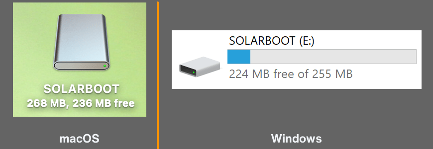

Networking¶
SolarNode will attempt to automatically configure networking access from a local DHCP server. For
many deployments the local network router is the DHCP server. SolarNode will identify itself with
the name solarnode, so in many cases you can reach the SolarNode setup app at http://solarnode/.
Finding SolarNode's network address¶
To find what network address SolarNode is using, you have a few options:
Consult your network router¶
Your local network router is very likely to have a record of SolarNode's network connection. Log
into the router's management UI and look for a device named solarnode.
Connect a keyboard and screen¶
If your SolarNode supports connecting a keyboard and screen, you can log into the SolarNode command line
console and run ip -br addr to print out a brief summary of the current networking configuration:
$ ip -br addr
lo UNKNOWN 127.0.0.1/8 ::1/128
eth0 UP 192.168.0.254/24 fe80::e65f:1ff:fed1:893c/64
wlan0 DOWN
In the previous output, SolarNode has an ethernet device eth0 with a network address 192.168.0.254
and a WiFi device wlan0 that is not connected. You could reach that SolarNode at
http://192.168.0.254/.
Tip
You can get more details by running ip addr (without the -br argument).
WiFi¶
If your device will use WiFi for network access, you will need to configure the network name and credentials to use.
You can do that by creating a wpa_supplicant.conf file on the SolarNodeOS media (typically an SD card). For Raspberry Pi media, you can mount the SD card on your computer and it will mount the appropriate drive for you.

Once mounted use your favorite text editor to create a wpa_supplicant.conf file with content like
this:
country=nz
network={
ssid="wifi network name here"
psk="wifi password here"
}
Change the country=nz to match your own country code.
Ethernet static IP address¶
By default SolarNode relies on a DHCP server to supply it with a dynamic IP address.
To configure a static IP address, edit the /etc/systemd/network/10-eth.network file
and configure it along these lines:
[Network]
DNS=1.1.1.1
DNS=8.8.8.8
[Address]
Address=10.1.10.9/24
[Route]
Gateway=10.1.10.1
Ethernet internet sharing¶
For devices with two ethernet ports, you can connect one port to a wide-area network (with access to the internet) and the other to a local-area network, and provide the local-area network with access to the internet with SolarNode acting as the router (gateway) to the wide-area network.
For this guide we assume that the wide-area network (WAN) interface is eth0 and the local-area
network (LAN) is eth1. The WAN interface can be configured as DHCP (the default) or with a static
IP as outlined above.
You can choose to use static IP addressing or DHCP for the LAN, as outlined in the subsequent sections.
IP forwarding firewall changes¶
The SolarNode firewall must be configured to allow LAN devices
access to the WAN. Edit the /etc/nftables.conf file to change this line:
add rule ip filter FORWARD counter reject
to this:
add rule ip filter FORWARD counter accept
Then reload the firewall settings with:
sudo systemctl reload nftables
LAN static IP addressing¶
If you prefer to use static IP addresses for the LAN devices, or cannot use DHCP for any reason, you
can configure all LAN devices with static IP addresses within the subnet of your LAN. For this guide
we will use 192.168.100.1/24 for SolarNode's IP address and network mask, but you could use any
available network range. Create a /etc/systemd/network/11-eth.network file with the following:
[Match]
Name=eth1
[Network]
IPForward=yes
IPMasquerade=both
[Address]
Address=192.168.100.1/24
To reload the network settings run:
sudo systemctl restart systemd-networkd
LAN DHCP addressing¶
Instead of using static IP addresses on the LAN devices, you SolarNode can operate a DHCP server for
the LAN. For this example the DHCP server will dynamically assign IP addresses to LAN devices,
starting at 192.168.100.100. Create a /etc/systemd/network/11-eth.network file with the
following:
[Match]
Name=eth1
[Network]
IPForward=yes
IPMasquerade=both
DHCPServer=yes
[Address]
Address=192.168.100.1/24
[DHCPServer]
PoolOffset=100
More options are available, see here.
DHCP reserved IP addresses¶
If you would like consistent IP addresses assigned to LAN devices while using DHCP, you can
configure specific IP addresses based on the device MAC addresses. Just add
[DHCPServerStaticLease] sections to the network configuration, one for each device you want to
assign a specific IP address to. For example:
[Match]
Name=eth1
[Network]
IPForward=yes
IPMasquerade=both
DHCPServer=yes
[Address]
Address=192.168.100.1/24
[DHCPServer]
PoolOffset=100
[DHCPServerStaticLease]
MACAddress=00:01:c0:0b:06:08
Address=192.168.100.10
DNS server¶
You can configure SolarNode as a DNS server for the local network. This can be useful when sharing a
wide-area network connection with a local network. First you must allow DNS queries through the
firewall, so edit the /etc/nftables.conf file to add the following, just before the # Allow DHCP
line:
# Allow DNS queries
add rule ip filter INPUT udp dport 53 counter accept
Reload the firewall configuration with
sudo systemctl reload nftables
Then edit the /etc/systemd/resolved.conf file to add a DNSStubListenerExtra
line for SolarNode's LAN address, for example:
DNSStubListenerExtra=192.168.100.1
Then reload the configuration with:
sudo systemctl restart systemd-resolved
For more details on the resolved.conf file see here.